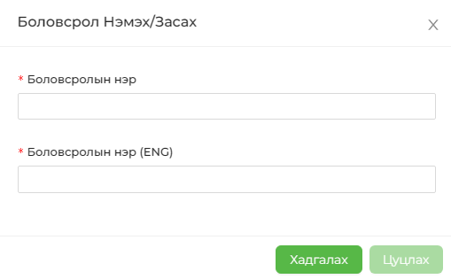

Ажилтны боловсролын байдлыг бүртгэж өгнө. Өөрөөр хэлбэл, бага боловсрол, бүрэн дунд, бакалавр гэх мэт. Шинээр бүртгэл үүсгэхдээ БОЛОВСРОЛ НЭМЭХ товчийг даран цонхон дахь мэдээллийг бөглөснөөр бүртгэл амжилттай үүснэ.
